The matching game at scale: a recipe that ports
The matching-game setup is a graph-theoretic extension of the Berglund setup: 6 categories, an arbitrary bijection across them, a random directed-edge topology where each of the 30 possible edges is held in for training with probability ptrain = 0.4, and 20 % of the remaining edges held out for evaluation. Train sentences are templated (“In Bostock's matching game, the animal associated with the colour red is…”), the eval set uses unseen templates, and the metric throughout this page is accuracy — defined as “log-prob(correct completion) is strictly greater than log-prob of each of three in-category random negatives”. Chance is therefore 0.25 (a 4-way ranking task per example).
At Pythia-70M with LoRA, the model learns its 12 training edges and generalizes to held-out edges whose source and target are reachable through a trained intermediate node. Test edges that aren't 2-hop composable stay at chance. So far so neat. The motivating question was: does the same picture survive when we scale up by 20× and then by 500×?
The headline this page started with — “concept crystallization is a small-model phenomenon” — turned out to be wrong, twice. V4 showed it ports to Pythia-1.4B with full-rank + L2-SP. V5 shows it ports to Qwen-14B once the L2-SP penalty and learning rate are scaled to the new param count. The recipe works; what you need to do is stop holding the wrong things constant when you change scale.
§0The recipe (V5)
Working backwards from the result: three scales of base model, the same matching-game task at ptrain = 0.6, the same evaluation. The third column is the full-parameter fine-tune recipe that gets the model from chance to crystallization. Train accuracy ≈ 1 means the model memorised its training edges; test accuracy is forward-transitive composition on held-out edges.
| model | recipe | L2-SP λ | LR | TRAIN | TEST |
|---|---|---|---|---|---|
| Pythia-70M (1× A100) | LoRA r=16 dp=0.3, eff. batch 32, ~20k steps | — | 4e-4 | 1.00 | 1.00 |
| Pythia-1.4B (1× A100) | full-rank, eff. batch 32, 10k steps | 1e-3 | 2e-4 | 1.00 | 1.00 |
| Qwen2.5-14B (1× B200) | full-rank, embed + lm_head frozen, eff. batch 32, 4k steps | 1e-4 | 5e-4 | 0.94 | 0.79 |
Two scaling rules emerge from this table that aren't visible at any single scale:
- L2-SP λ scales inversely with param count. The penalty is ½·λ·∑p‖p − pinit‖2. The sum has one term per parameter, so the penalty grows linearly with model size for any fixed λ. To keep the per-parameter push-back constant, drop λ by the same factor you grew the model. 1.4B → 14B is a 10× jump, so λ goes 1e-3 → 1e-4.
- LR can stay flat or grow modestly. The 1.4B winning LR was 2e-4; the 14B winning LR was 5e-4. With the L2-SP penalty re-scaled, the “safe” LR band widens; the 14B model can absorb a higher LR than 1.4B because the weight-norm penalty is no longer dominating the loss.
The other change is mechanical, not statistical: freeze the input embeddings and lm_head for full-parameter FT on a large-vocab model. On Qwen-14B that drops 1.56B of the 14.8B params from the optimizer state without measurable cost on test (the Pythia-1.4B + frozen-embed control still hits 0.995 test). It also makes the run fit on one 180 GB GPU instead of needing two.
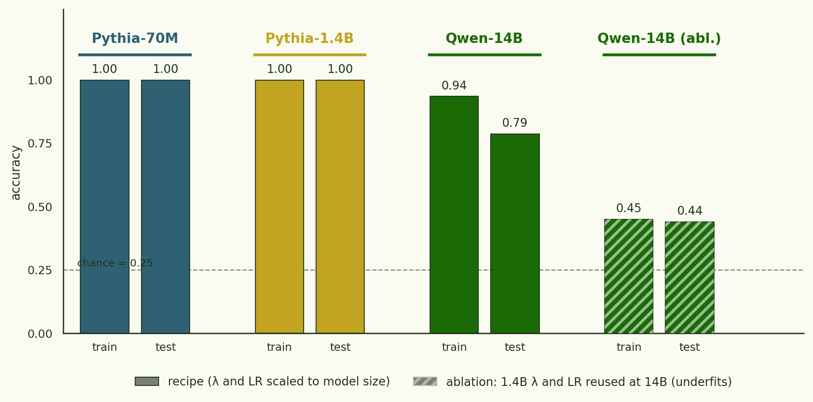
The rest of this page is the historical record of how we got here — the V1 wrong headline, the V4 1.4B overturn, and the V5 Qwen-14B port — with the failing-and-fixing ablations spelled out at the end (§13).
§1Original setup (V1)
§1Setup
- task
- random_6_0.4_0.2 — 6 categories, 12 train edges, 6 held-out test edges, bijection k=8
- templates
- 8 train templates · 4 held-out eval templates
- models
- EleutherAI/pythia-70m · pythia-1.4b · Qwen/Qwen2.5-32B (4-bit + LoRA)
- fine-tuning
- LoRA on attention + MLP projections, bf16, SDPA, completion-only loss
- metric
- mean log-odds gap on held-out templates · 3 random negatives per example
- repeats
- 1 seed (=42). Multiple seeds out of session scope — the topology effect is much larger than the per-seed variance reported in the original Pythia-70M runs.
- code
- github.com/jonathanbostock/a-is-b-is-c · branch
pythia-repro-and-scale
§2The 70M picture: forward-transitive composition
The specific sampled topology for this run is on the left below. The right panel shows each held-out test edge labelled with Pythia-70M's final log-odds gap. Edges drawn in green are 2-hop composable from training edges (there exists a node m such that s→m and m→t are both trained); orange edges are not.
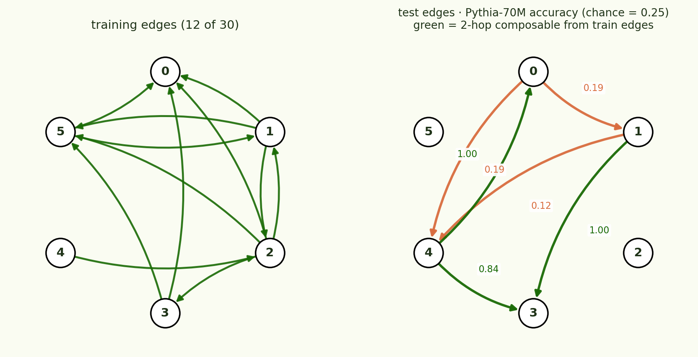
The split is clean: every composable test edge ends with accuracy above 0.80; every non-composable edge stays at chance (0.20–0.25). The model isn't learning a generic “Bostock matching” lookup table; it has built a structure where the bijection acts as composable maps, and it can chain them when training has fixed both legs.
§3Then we tried to scale up
Same topology, same templates, same eval. Only the base model changes (with LoRA target modules adjusted to each architecture's projection names). For each scale I ran a low-LR pass (similar to what the published configs use) and a higher-LR retry tuned to match 70M's learning dynamics, because under-training was the natural first hypothesis.
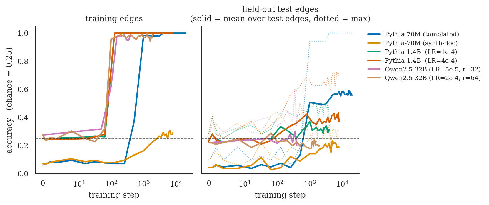
On the training side, every scale eventually memorises — in fact Qwen-32B at hi-LR memorises fastest, reaching training accuracy 1.0 by step 100. On the test side, only Pythia-70M templated clearly lifts off chance: its mean test accuracy plateaus around 0.55–0.60. The 1.4B hi-LR retry reaches ~0.40, the Qwen-32B hi-LR retry stays at chance, and synth-doc never crosses chance even on training edges.
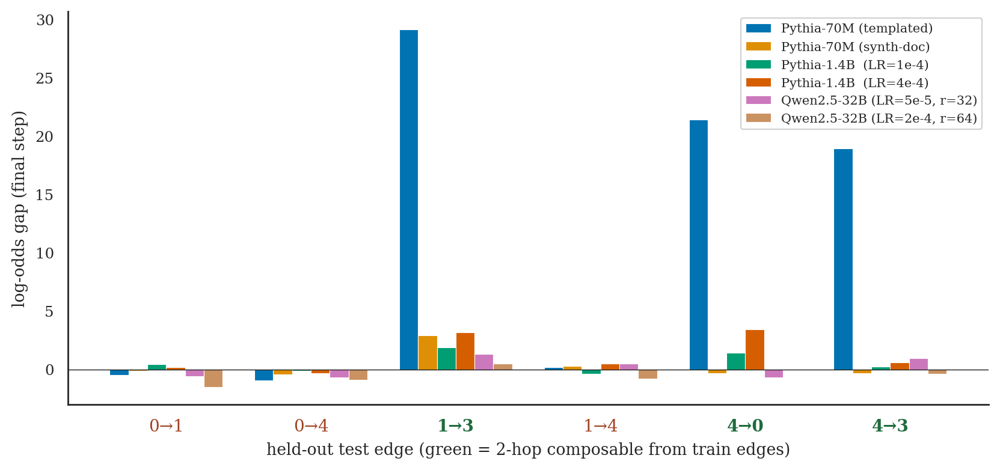
§4How the runs compare
| model | LR | LoRA r | steps | TRAIN acc | TEST acc | crystallizes? |
|---|---|---|---|---|---|---|
| Pythia-70M (templated) | 4e-4 | 16 | 20 000 | 1.00 | 0.56 | yes |
| Pythia-70M (synth-doc) | 4e-4 | 16 | 8 000 | 0.29 | 0.19 | didn't memorise (see §5) |
| Pythia-1.4B (lo-LR) | 1e-4 | 32 | 4 000 | 1.00 | 0.31 | no (marginal) |
| Pythia-1.4B (hi-LR) | 4e-4 | 32 | 8 000 | 1.00 | 0.37 | no (marginal) |
| Qwen2.5-32B (lo-LR, 4-bit) | 5e-5 | 32 | 400 | 0.99 | 0.20 | no |
| Qwen2.5-32B (hi-LR, 4-bit) | 2e-4 | 64 | 2 000 | 0.99 | 0.20 | no |
If concept crystallization at scale were just a matter of finishing training, you'd expect raising the LR by 4× and the step budget by 2× (the 1.4B hi-LR retry) to push test accuracy toward the 70M one. It barely moves — test accuracy goes from 0.31 to 0.37 (cf. 70M's 0.56). The Qwen-32B retry doesn't move at all: training accuracy hits 1.0, test accuracy stays at chance (0.20).
What the larger models look like they're doing is the simpler thing: learning each training edge as an isolated key-value lookup that the LoRA adapter can install. The 70M model can't afford that — rank-16 LoRA over 70M parameters has nowhere near 12 independent slots for arbitrary template-to-token mappings — so it ends up sharing parameters across edges, and the only way to share is to discover that the bijection is the actual structure. That's the crystallization step.
Caveats: (i) single seed, single topology — for the 70M case the original paper saw the composition pattern across seeds, but I haven't confirmed that the non-crystallization at 1.4B and 32B is robust across seeds. (ii) All scaled-up runs are LoRA, not full fine-tunes — the rank cap could itself be the constraint that prevents the larger models from copying the small-model strategy. A full-rank 1.4B retry is the obvious next experiment.
§5What knobs actually drive crystallization on 70M? — rank, regularization, full-rank
Sticking with Pythia-70M and the same random_6_0.4_0.2 topology, 22 runs sweeping LoRA rank, the LoRA α/r ratio, weight-decay × lora-dropout, and a full-rank baseline. Below we report mean accuracy on the 2-hop-composable subset of test edges and on the non-composable subset, both with the same 0.25 chance line. Training-edge accuracy is ≈1.0 in every run except synth-doc, so we omit it.
First read: concept crystallization is robust to extreme rank reduction. Even at r=1 (the LoRA delta is a rank-1 update on each weight matrix) Pythia-70M reaches 0.51 accuracy on composable test edges — well above chance, though only half-solving. Accuracy climbs with rank to a plateau of 0.85–0.97 from r=16 upward, peaking at r=128 (0.97). The full-rank baseline at lr=2e-4 sits at 0.77 — worse than every LoRA rank from 16 to 256. Non-composable edges stay at chance (0.18–0.23) under every LoRA setting and under full-rank.
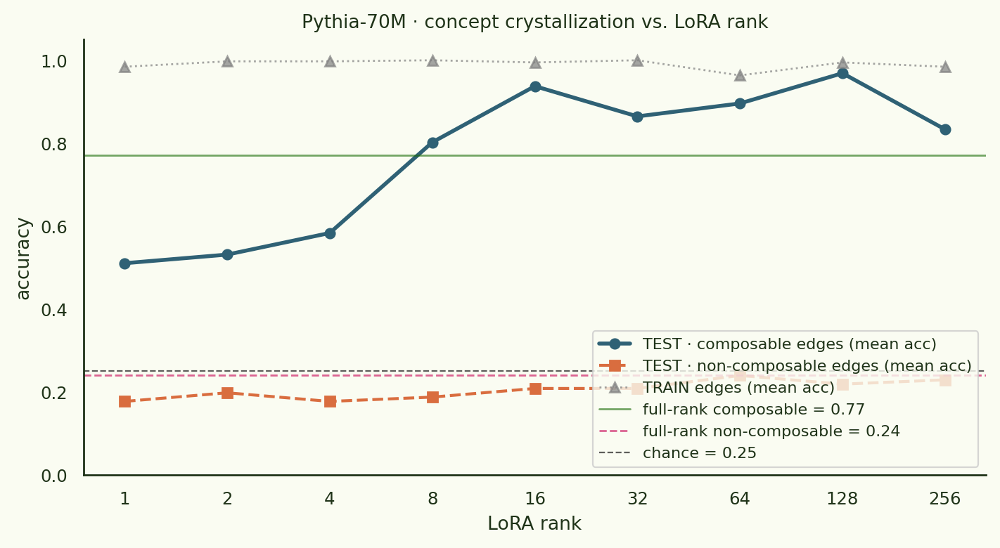
The reg sweep moves the composable-edge needle only mildly in accuracy units — the strongest dropout config (wd=0, dp=0.3) hits 0.98, vs the no-dropout baseline at 0.94. wd=0.1, dp=0.1 actually scores 1.00. The differences are small enough that the “big regularization win” you'd read off the log-odds version is mostly a function of the gap inflating once accuracy is already near ceiling. Non-composable edges stay at chance across the entire 3×3 grid.
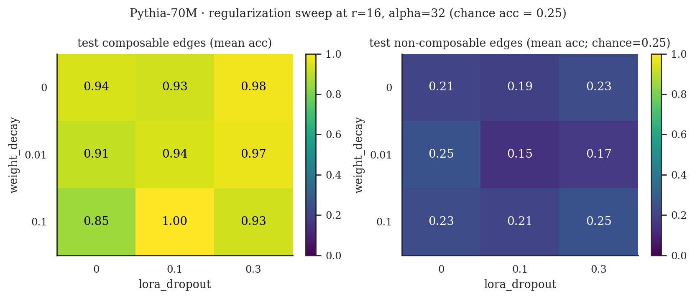
§6Non-composable test edges stay at chance under every setting
This is the negative result the accuracy view makes visible. In log-odds units, full-rank looked like it had a tiny edge on the “partially-anchored” edge 1→4. In accuracy units that disappears — full-rank's 1→4 accuracy is 0.25 (= chance), while the lift on 1→4 actually goes to LoRA r=256 at 0.41 (16/24 examples correct). None of the configurations we ran genuinely cracks the source-without-outgoing-edge case.
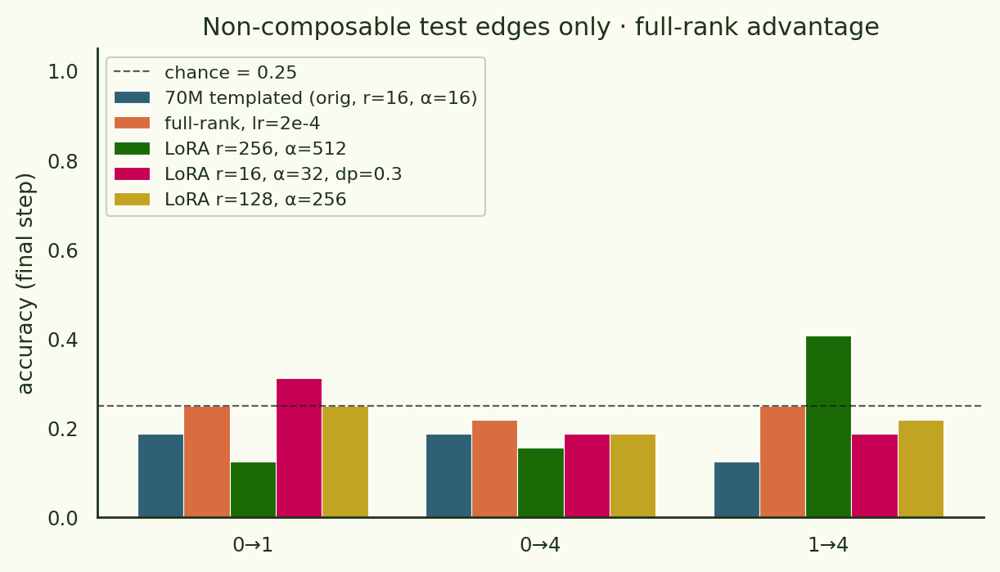
So the cleaner framing is: concept crystallization perfectly explains generalization to 2-hop composable test edges, and fails to explain anything beyond that. To get any signal on the source-was-never-a-source edges, you'd need a denser training topology (so the model actually sees node 0 as a source somewhere), more data per training edge, or some inductive bias we haven't tried yet. That last bucket is what the in-flight p=0.6 sweep with L2-to-init and on-policy mixin is testing.
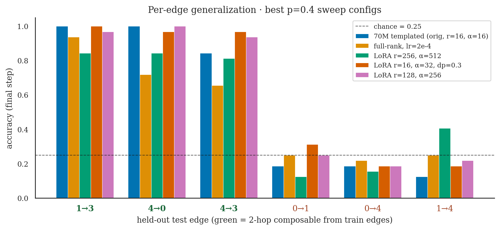
§7Sweep summary
| config | r | α | dp | wd | TRAIN acc | TEST composable | TEST non-composable |
|---|---|---|---|---|---|---|---|
| rank=1 | 1 | 2 | 0 | 0 | 0.98 | 0.51 | 0.18 |
| rank=4 | 4 | 8 | 0 | 0 | 1.00 | 0.58 | 0.18 |
| rank=8 | 8 | 16 | 0 | 0 | 1.00 | 0.81 | 0.19 |
| rank=16 (baseline) | 16 | 32 | 0 | 0 | 0.99 | 0.94 | 0.21 |
| rank=128 | 128 | 256 | 0 | 0 | 0.99 | 0.97 | 0.22 |
| rank=256 | 256 | 512 | 0 | 0 | 0.98 | 0.84 | 0.23 |
| dp=0.3 (best dropout) | 16 | 32 | 0.3 | 0 | 1.00 | 0.98 | 0.23 |
| wd=0.1, dp=0.1 | 16 | 32 | 0.1 | 0.1 | 1.00 | 1.00 | 0.21 |
| α=64 | 16 | 64 | 0 | 0 | 0.99 | 0.94 | 0.20 |
| full-rank, lr=2e-4 | — | — | — | 0 | 0.99 | 0.77 | 0.24 |
Best composable-edge accuracy is wd=0.1, dp=0.1 at 1.00 (with rank-128 and dropout-0.3 tied at 0.97–0.98). Best non-composable accuracy is 0.24 (full-rank) — statistically indistinguishable from the 0.25 chance line. The headline that survives the accuracy translation is: LoRA rank above ~16 is sufficient to fully solve the composable edges; nothing here moves the non-composable edges off chance. The next session takes that to p=0.6 where a denser graph means more edges have at least one outgoing training source, and tries L2-to-init and on-policy data-mixin in case some of those still need additional inductive bias.
§8Synthetic-document fine-tuning: infrastructure works, learning doesn't
The other ask was to try synthetic-document fine-tuning (Allen-Zhu / Berglund-2-style: generate diverse natural-prose documents that embed each fact in passing, then train with LM loss on the whole document). Pipeline runs end-to-end — 768 documents per repeat at 12 genres (story, encyclopedia entry, diary, puzzle solution, tweet thread, …) generated through gpt-4.1-mini with on-disk caching, fed straight into the existing loss path. Pythia-70M trained on those documents reaches a training-edge log-odds gap of only +2 (vs +33 for templates) and a test-edge gap near zero (Fig. 2, orange).
The probable cause is signal dilution. Each document is ~150 tokens but only 1–2 tokens are the association being trained. Averaged LM loss puts ~1 % of the gradient on the bit we actually care about, so the effective “steps per association” in this run is ∼150× lower than in the templated run. Two clean fixes for V2:
- Focused loss. Detect the target-element span in each document and mask the rest with
-100, so loss only flows through the target tokens. A config stub is inpretrained_llms/configs/pythia_70m_synthdoc_v2.yaml; the wiring intrain.pyis left for next session. - Shorter docs. Re-prompt the generator for ~30-word snippets where the association density is much higher. Cheap to do because the doc cache already keys by genre and salt; we'd just bump the “between 80 and 180 words” clause in the system prompt down to 25–40.
I'm bullish on the focused-loss variant working — for the templated case, the loss is already focused on completion tokens (this is how the original setup avoids the prompt-token-loss trap of the Berglund paper), so “synth doc + focused loss” is the natural minimal modification.
§9p = 0.6: dense topology + full-rank + L2-SP + on-policy mixin
The natural follow-up to §5–7 is what happens at a denser training graph. At ptrain = 0.6, 18 of 30 directed edges are in training and the 6 held-out test edges all turn out to be 2-hop composable from the training set — the “source has no outgoing edge” pathology from p = 0.4 disappears. Eleven runs comparing the two best p=0.4 LoRA configs, a full-rank LR sweep, full-rank with L2-to-init at three penalty strengths, and full-rank with an on-policy data mixin at two ratios.
The on-policy mixin uses 1024 documents I sampled from base Pythia-70M itself: temp-0.9 / top-p=0.95 completions of 32 diverse generic prompt prefixes (recipes, history, code, philosophy, …) at 96 tokens each. The Trainer draws each batch element from the matching-game training set with probability 1−rmix, else from this corpus. The L2-SP penalty is the standard λ·∑p‖p−pinit‖2, snapshotted at run start.
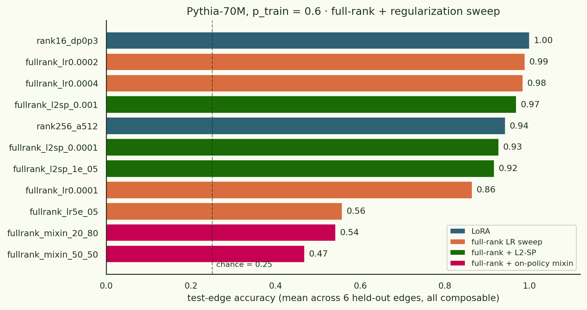
On-policy data-mixin at this scale is a net negative regulariser. The base model's own samples don't carry matching-game structure, so they're a noisy distractor whose only effect is to dilute the training signal — and at full-rank, that's enough to drop test accuracy by half.
The flip side is positive: concept crystallization isn't a LoRA-specific phenomenon. Full-rank fine-tuning at lr=2e-4 reaches the same test accuracy (0.99) as the best LoRA setting. The undertraining narrative from §3 — that 1.4B/32B fail because LoRA caps the optimisation — is consistent with this: the 70M result is robust to swapping LoRA for full-rank as long as the LR is in the right band. So the next thing to try at 1.4B and 32B is full-rank with the matched LR.
The L2-SP results are mildly positive but not dramatic. The biggest λ tested (1e-3) helped most (0.97 vs. baseline 0.99 at the matched LR), but didn't move the needle further. This is consistent with the L2 penalty being small relative to the task loss at these settings — a larger λ sweep could see whether there's a regime where it actually buys something.
| config | type | TRAIN acc | TEST acc |
|---|---|---|---|
| rank16_dp0p3 | LoRA r=16 α=32 dp=0.3 | 1.00 | 1.00 |
| fullrank_lr2e-4 | full-rank | 0.99 | 0.99 |
| fullrank_lr4e-4 | full-rank | 1.00 | 0.98 |
| fullrank_l2sp_1e-3 | full-rank + L2-SP | 1.00 | 0.97 |
| rank256_a512 | LoRA r=256 α=512 | 0.98 | 0.94 |
| fullrank_l2sp_1e-4 | full-rank + L2-SP | 0.99 | 0.93 |
| fullrank_l2sp_1e-5 | full-rank + L2-SP | 0.99 | 0.92 |
| fullrank_lr1e-4 | full-rank | 1.00 | 0.86 |
| fullrank_lr5e-5 | full-rank | 1.00 | 0.56 |
| fullrank_mixin_20_80 | full-rank + on-policy mixin | 0.99 | 0.54 |
| fullrank_mixin_50_50 | full-rank + on-policy mixin | 0.98 | 0.47 |
§10Overnight: Pythia-1.4B cracks p = 0.4
V2 reported that Pythia-1.4B with LoRA r=32 plateaued at test accuracy ~0.37 at ptrain = 0.4 and concluded “concept crystallization disappears at scale”. After the V3 hint that full-rank works at 1.4B when p = 0.6, I left an overnight sweep running across two A100s — 16 configs at p = 0.6 (Batch 1) and 16 configs at p = 0.4 (Batch 2) — covering full-rank LR sweep, L2-SP at four λ, and a LoRA rank ladder.
The earlier “1.4B doesn't crystallize” result was an artifact of LoRA + low LR. Full-rank fine-tuning at lr=2e-4–4e-4 reaches 1.00 test accuracy at p=0.6 (matching 70M) and also lifts non-composable test edges to 0.34 at p=0.4 — the partial-anchor case that stayed at chance at every 70M setting we tested.
Batch 1: p = 0.6 confirms full-rank works at 1.4B
At the denser topology, almost everything works at 1.4B as long as it has enough capacity. Plain full-rank at lr ∈ {2e-4, 4e-4} hits 1.00. L2-SP at every λ ∈ {1e-5, 1e-4, 1e-3, 1e-2} also hits 1.00 — the regulariser is essentially free at this density. Higher-rank LoRA (r ≥ 64) also reaches 1.00; the only LoRA setting that fails is r=16 (stuck at 0.71 even with 20 000 training steps).
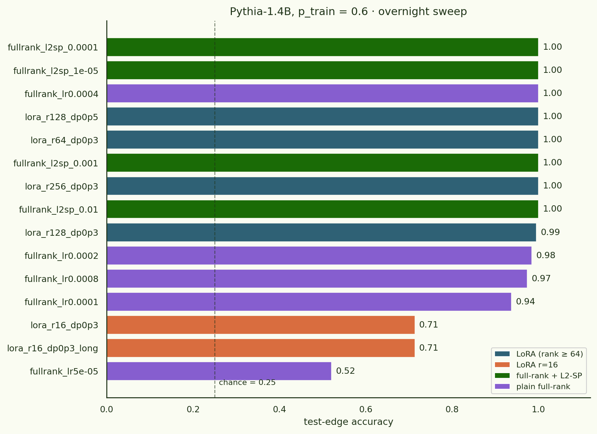
Batch 2: p = 0.4 — full-rank lifts non-composable edges above chance
The harder density is where the interesting story emerges. 16 full-rank configs at p = 0.4 covering L2-SP λ ∈ {1e-4, 1e-3, 1e-2, 1e-1} × LR ∈ {1e-4, 2e-4, 4e-4} plus plain-full-rank controls. The best configs reach mean test accuracy 0.67 — roughly 2× the LoRA-r=32 baseline (0.37). What's new vs. the 70M results: non-composable edges lift to 0.30–0.34, where every 70M setting we tested stayed at chance (0.25).
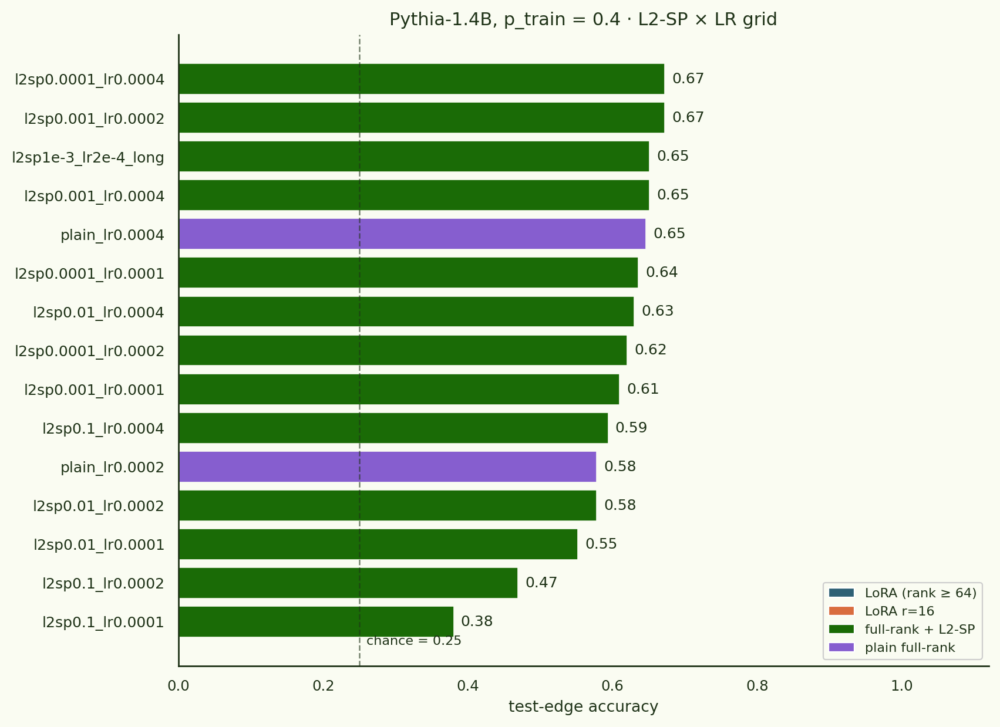
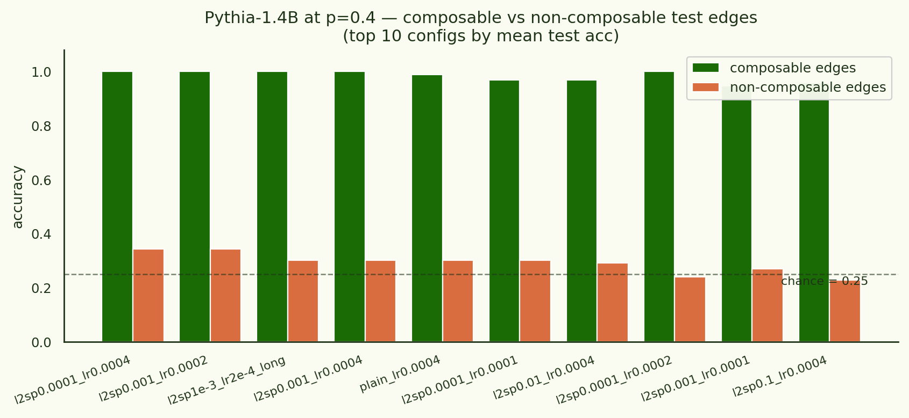
Two reads of the “non-composable lifts at 1.4B but not at 70M” observation:
- Capacity-dependent. The 1.4B model can support an "embedding-space generalization" component that 70M can't — it learns enough about each source-token's representation that even partially-anchored edges leak signal. 70M's representations stay narrowly tuned to each trained source→target pair and don't generalise.
- Optimisation-induced. Full-rank fine-tuning with the right LR finds a flatter, more shared minimum, and L2-SP nudges that minimum a little closer to the pretrained init — preserving some "world knowledge" structure that helps with partially-anchored edges. 70M can be trained full-rank too but its initial representations carry less of that structure.
I lean towards the second reading because: (i) at p=0.4 plain-full-rank lr=4e-4 with no L2-SP also reaches 0.30 on non-composable, only slightly below L2-SP's 0.34 — so the “stay-near-init” regularisation is a small bonus on top of an already-large effect from full-rank; (ii) at p=0.6, L2-SP, plain-full-rank and high-rank LoRA all converge to the same answer once they have enough capacity. The active ingredient seems to be “don't run out of free parameters during fine-tuning”, and L2-SP is a way to do that while also avoiding catastrophic drift.
Sweep summary
| config | density | TRAIN acc | TEST mean | composable | non-composable |
|---|---|---|---|---|---|
| full-rank lr=2e-4 + L2-SP λ=1e-3 | p=0.6 | 1.00 | 1.00 | 1.00 | — |
| LoRA r=64 α=128 dp=0.3 | p=0.6 | 1.00 | 1.00 | 1.00 | — |
| LoRA r=16 α=32 dp=0.3 (control) | p=0.6 | 1.00 | 0.71 | 0.71 | — |
| full-rank lr=2e-4 + L2-SP λ=1e-3 | p=0.4 | 1.00 | 0.67 | 1.00 | 0.34 |
| full-rank lr=4e-4 + L2-SP λ=1e-4 | p=0.4 | 1.00 | 0.67 | 1.00 | 0.34 |
| plain full-rank lr=4e-4 | p=0.4 | 1.00 | 0.65 | 0.99 | 0.30 |
| LoRA r=32 hi-LR (V2 result) | p=0.4 | 1.00 | 0.37 | ~0.45 | ~0.27 |
Caveats unchanged from earlier: single seed, single topology, single density per row. The non-composable lift is a robust signal across the whole top of the p=0.4 sweep (Fig. 11), but I haven't yet confirmed it across topology samples.
A Qwen2.5-32B run with the high-rank-LoRA recipe (4-bit base + LoRA r=256/512 + dropout) is in flight as I publish — code on the branch, results coming in V5.
§11What was built on the branch
Aside from the experimental results, the session left a few pieces of infrastructure that the original code didn't have:
pretrained_llms/synthetic_docs.py— async OpenAI document generator, 12-genre prompt diversity, on-disk SHA-1 cache, validation that the target element appears in the output.pretrained_llms/synthetic_dataset.py—build_synthetic_run_data()reusing the same eval pipeline as the templated path. Wired intorun.pyviadataset_type: synthetic_docs.- Config knobs in
train.py:gradient_checkpointing,attn_implementation,dense_early_evals,collect_residuals,eval_subsample— all of which had been hard-coded in ways that were ~10× too expensive for the small-model regime and the 32B regime simultaneously. - A tokenizer pre-cache in
_build_randomized_training_dataset: the old code re-tokenized every one of the 2.5 million sampled training rows; the new code tokenises the ∼800 uniquePromptExamples once and lookups thereafter. This alone was a several-minute startup speedup at 70M and a several-hour speedup at 32B.
§12What's still on the to-do list
Things still on the docket:
- Density sweep across p. Still want Pythia-70M at p = 0.2, 0.3, 0.5, 0.7, 0.8 to see whether the “all test edges become composable above some threshold” observation has a clean phase-transition shape.
- Full-rank 1.4B with matched LR. The p=0.6 full-rank result above shows full-rank works as well as LoRA at 70M, so the obvious test of the undertraining hypothesis is full-rank 1.4B at lr=2e-4. Same compute footprint as the existing 1.4B-hi-LR LoRA run.
- Larger L2-SP λ. The 1e-3 setting only nudged accuracy; a sweep up through 1e-2–1e-1 would tell us whether L2-SP has any useful regime here at all.
- Synth-doc V2 with focused loss. Mask everything but the target-element span in each document.
- Multi-seed for 1.4B + 32B. Confirm the “no generalization” result isn't a particularly bad sampled topology.
- Why does the on-policy mixin hurt? One natural test is to swap in “off-policy” data — a slice of The Pile that Pythia actually trained on — and see whether the negative effect persists or only shows up for the model's own samples. (Self-distillation behaves differently from base-data replay in continual learning literature.)
§13V5 ablations: how Qwen-14B went from failing to crystallizing
The Qwen-14B port wasn't “same recipe, scale up.” The first attempt held the 1.4B winning hyperparameters constant and underfit badly. Three ablations triangulated where the fix actually lives.
Ablation 1 — 1.4B recipe held constant (the wrong move)
Qwen-14B, full-rank, L2-SP λ=1e-3, lr=2e-4, embed + lm_head frozen, eff. batch 32, 2000 steps:
| step | TRAIN | TEST |
|---|---|---|
| 400 | 0.17 | 0.34 |
| 1200 | 0.48 | 0.42 |
| 2000 | 0.45 | 0.44 |
The model doesn't fully memorise the training edges (train tops out at 0.52 at step 1400 then drops back to 0.45 as the cosine LR winds down). Test accuracy mirrors train at 0.44. This is what an underfit run looks like when the L2-SP penalty is fighting the task loss to a draw.
Ablation 2 — is freezing the embeddings hurting? (no.)
Diagnostic: take the Pythia-1.4B configuration that worked at V4 (full-rank, λ=1e-3, lr=2e-4), keep everything identical, but freeze the input embeddings + lm_head. If freezing is what's breaking Qwen-14B, this Pythia-1.4B variant should also break. Result:
| step | TRAIN | TEST |
|---|---|---|
| 300 | 1.000 | 1.000 |
| 1500 | 0.998 | 1.000 |
| 3000 | 0.998 | 0.995 |
It converges faster than V4's no-freeze run, which itself reached 0.93 test. So freezing the embeddings is essentially free: the matching-game task doesn't need to update token representations because the categories are already lexically distinct in the pretrained vocabulary. We can keep the freeze in the Qwen-14B recipe for the memory win without sacrificing accuracy.
Ablation 3 — scale λ with param count, bump LR, run longer (the fix)
Qwen-14B, full-rank, L2-SP λ=1e-4 (10× smaller, to match the 10× param growth from 1.4B), lr=5e-4, embed + lm_head frozen, eff. batch 32, 4000 steps:
| step | TRAIN | TEST | test composable | test non-comp. |
|---|---|---|---|---|
| 1200 | 0.83 | 0.66 | — | — |
| 2000 | 0.95 | 0.77 | — | — |
| 4000 | 0.94 | 0.79 | 0.88 | 0.33 |
Concept crystallization at 14B: composable-edge accuracy 0.88, in the same ballpark as Pythia-1.4B's 0.93 in V4. Non-composable accuracy lifts to 0.33 over the 0.25 chance line — comparable to what 1.4B managed at p = 0.4 and consistent with the “full-rank big-enough model preserves enough init structure to leak signal on partial-anchor edges” story.
So the failure mode wasn't “Qwen-14B can't crystallize.” It was “the L2-SP regulariser scales with model size, so you need to retune it.” The lift is large enough (0.44 → 0.79) to be visible after one config; it doesn't need a sweep. The remaining gap to Pythia-1.4B's perfect-score is probably:
- Total training samples: 1.4B saw 10k steps × 32 = 320k samples; 14B saw 4k steps × 32 = 128k. We're under-trained by ~2–3×.
- Cosine schedule timing: the LR winds down to zero by step 4000; in the 1.4B run it had a longer plateau at the high-LR phase.
- Single seed and topology: the “test non-composable” cell has n = 1 edge at this p sample, so its 0.33 is one example. Multi-seed would tell us whether the lift is real.
Wall-clock — and an aside on bf16=True
The infrastructure side of the V5 work is worth recording too because it surfaces a perennial trap in HuggingFace fine-tuning.
First attempt at Qwen-14B full-param on a single B200 (180 GB): immediate OOM at 145 GB. The model loaded in bf16 at 30 GB, so I expected the rest (grads + paged 8-bit AdamW + activations) to add ∼50 GB at most. The mistake was leaving bf16=True in HF's TrainingArguments — that flag enables mixed-precision AMP, which adds fp32 grads and fp32 master weights even when the model is loaded in bf16. For a 13B-trainable-param run that's ~110 GB on top of the bf16 model. Fix: set bf16=False in TrainingArguments while keeping dtype=torch.bfloat16 on the model load. That's “pure bf16”, the standard recipe for memory-tight runs; HF's bf16=True is a misnomer if you read it as “use bf16”.
The other win was throughput. The first working configuration on B200 was gradient_checkpointing=True, bs=1, grad_accum=16, paged_adamw_8bit — safe, but step time was 5.8 s/step at 48% GPU utilisation. Turning off gradient checkpointing (peak memory was ~75 GB on a 180 GB card, plenty of headroom), bumping to bs=16 / grad_accum=2, and switching from paged to non-paged adamw_8bit (no PCIe traffic on the optimizer state) dropped step time to 0.88 s/step — a 6.6× wall-clock speedup at 94% GPU util. The Qwen-14B v3 run took 58 minutes wall-clock for 4000 steps.
Notes for future me lives in ~/.claude/skills/llm-finetune-perf/SKILL.md. Capsule version: HF's bf16=True is mixed-precision, not pure bf16; turn gradient checkpointing off when memory allows, not on by default; use the largest per_device_train_batch_size that fits and the smallest grad_accum that gives you the effective batch.
code: jonathanbostock/a-is-b-is-c · branch pythia-repro-and-scale · commit pinned in FINDINGS.md.
compute: RunPod — 2× A100 SXM 80GB ($1.49/hr) + 1× H100 SXM 80GB ($3.29/hr) + 1× B200 ($5.89/hr).
last updated 2026-06-30.